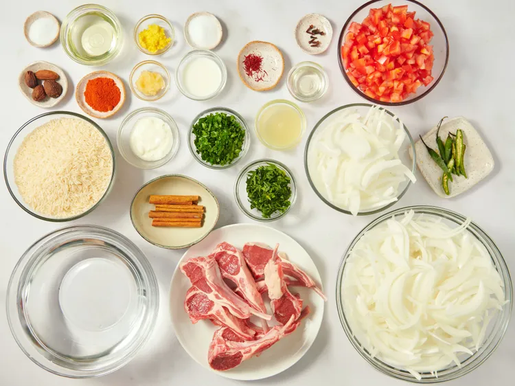
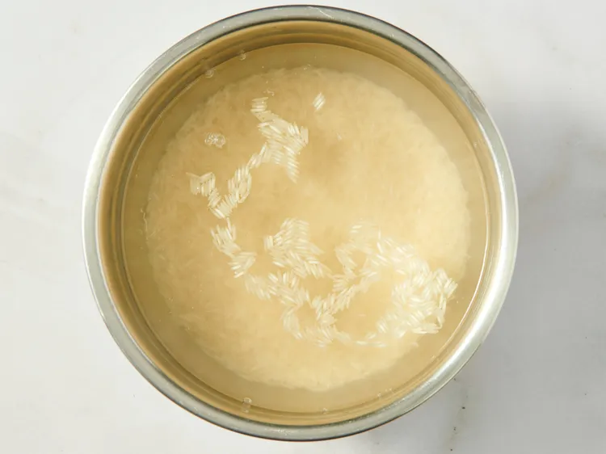
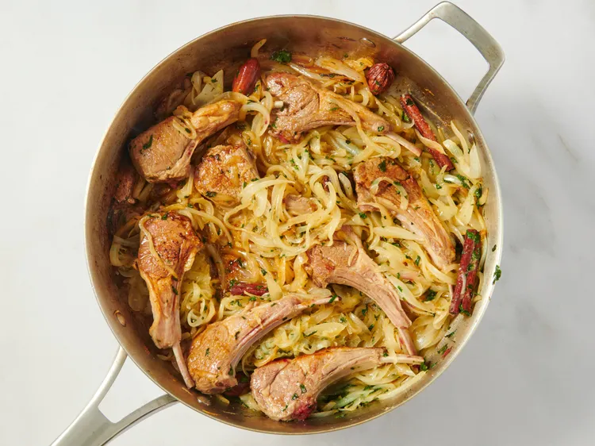
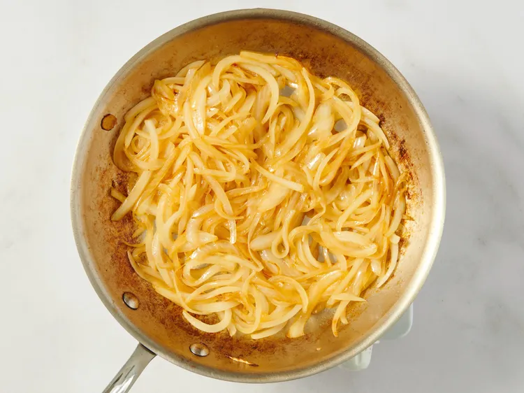
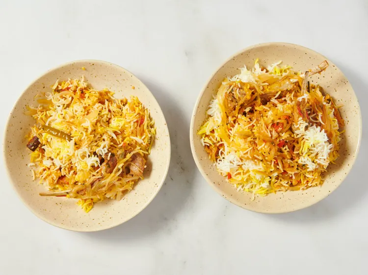

This festive lamb biryani dish is perfect for gatherings or celebrations. Biryani is a bit of a project and is time-consuming,
but I have never been disappointed with the results of this lamb biryani recipe. It's always a huge hit!
Gather all ingredients.
Place basmati rice in a large container and cover with several inches of cool water; let stand 30 minutes. Drain.

Heat 1/4 cup oil in a large skillet over medium heat; add cloves, cardamom pods, and cinnamon sticks and cook in the hot oil
until fragrant, about 1 minute. Add onions; cook and stir until onions are lightly browned, about 5 minutes. Stir garlic paste
and ginger paste into onion mixture; cook until fragrant, about 1 minute. Sprinkle cilantro and mint over onion mixture
and cook 1 minute more.
Add lamb chops to the skillet; season with salt. Cook lamb until chops are browned on both sides, about 20 minutes.

Stir in tomatoes, green chile peppers, and ground red pepper; continue cooking until oil begins to separate
from the sauce, about 10 minutes. Add yogurt and lemon juice; cover and cook until the lamb is tender,
about 15 minutes. Add some water as needed
to keep mixture from getting too dry.
Place rice, 7 ½ cups water, and 1 teaspoon salt in a saucepan; bring to a boil and simmer until rice is nearly done yet
a little chewy, 10 to 15 minutes. Drain any excess water.
Heat 1 tablespoon oil in a small skillet; add sliced onion and cook until lightly browned.

Layer about ½ of the rice in the bottom of a deep pot with a lid. Spoon the lamb masala mixture over the rice. Spread
fried onion over lamb masala. Top with remaining rice.
Stir saffron and warm milk together in a small bowl; pour over top layer of rice. Cover the pot with the
lid and place the pot over low heat; cook until the rice is thoroughly cooked, about 15 minutes.
Serve and enjoy!
